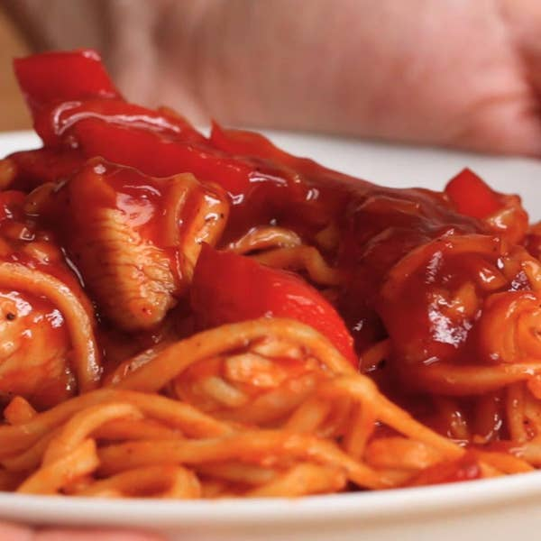

Sweet and Sour Chicken Noodles

Preparation time: 30 minutes
Ingredients:
2 chicken breasts
1 teaspoon salt
½ teaspoon pepper
2 cloves garlic
1 red pepper
2 tablespoons soy sauce
1 tablespoon ketchup
1 tablespoon cider vinegar
9 oz noodle(250 g), cooked
sesame seed, to garnish
Instructions:
Sear the chicken until golden brown in the pan with the salt and pepper. Take out and set aside.
In the same pan, fry the garlic and red pepper for a couple of minutes before stirring in the soy sauce, ketchup, and vinegar
Add the chicken and noodles, and mix together for another couple of minutes.
Garnish with sesame seeds.
Enjoy!
Main Page